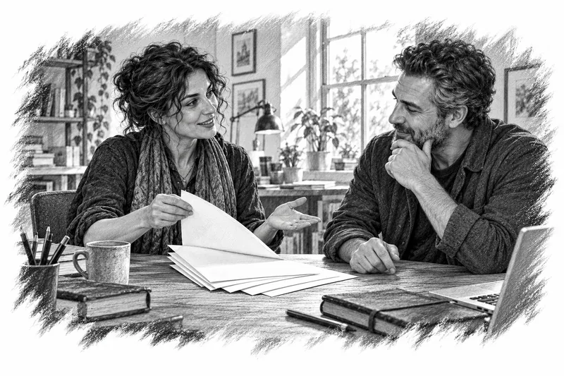

A lesson with a purpose.
Study storytelling principles adapted from Saad Rawdan’s book, with before-and-after examples and a practical exercise in each lesson.
Turn a clear idea into content people can follow. Learn through short text lessons, original examples and practical writing exercises—at your own pace.
Open the members’ portalAvailable in English, Arabic, Spanish, French and Korean.
Create an account or sign in with your email, then request enrollment.
Study storytelling principles adapted from Saad Rawdan’s book, with before-and-after examples and a practical exercise in each lesson.
Write your answers, save personal notes, bookmark lessons and check your understanding. Continue from your saved progress when you return.

03 / CREATEUse ten editable templates and five portfolio briefs to develop content you can revise, export and use in your own projects.
Creators, freelance writers, social media managers and business owners who want to improve their content writing. You can begin with one simple idea.
No. The learning experience is entirely text-based: lessons, examples, exercises, templates and portfolio briefs.
Create an account or sign in with your email, then request enrollment.
Yes. The portal includes an export of your saved writing and notes. Your own saved-work export remains available after course membership expires, provided you can still sign in to the portal.
All twelve lessons, exercises, a notes space, bookmarks, quizzes, ten editable templates and a five-piece portfolio.
One enrollment · Course access
Create accountEnrollment is reviewed by the course administrator. Automatic online payment is not currently enabled.
A text-based workshop by Saad Rawdan.